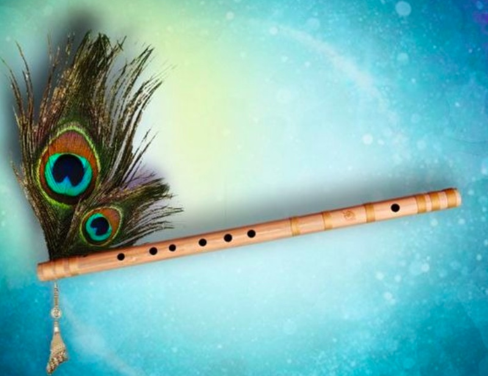

Learn to play Kabira
Here, is my flute Cover on Kabira. Observe my finger movements and with reference to the notes given below, play it soothly.
Here are the Sargam Notation of the song for your reference.
Sargam Notations of Kabira
Tuti | Chaarpaayi | Wohi
G m|G S R S | SS
Thandi purvaayi rasta dekhe| eeee
GG m |GSRS | SN DR SR| Gm GR SR
Doodhon ki malaai wohi
G m|G S R S | SS
Mitti ki suraahi rasta dekheee..
GG m |GSRS | SN DR SR| Gm GR SR
Gudiya re gudiya tera | Gudda pardesiya
P D SS| R GG GG | GmPD Pm| GR
Jodi Aasmaani ho gayi
RR RR | P GG | R SR
Shagun pe dekho shad maani ho gayi..
PG RS ND | RR RR PGG |R SS
Re Kabira Maan Ja| Re Fakeera yun na ja
PR RS | NPD | PR RSS | NPD
Aaja Tujhko pukaare teri parchaiyaa...
DD | D GG m GRGR SN| N SS GR
Hope you were able to understand the notations, and played it well.
Let us meet agin in another lesson, Till then Happy Fluting!!
